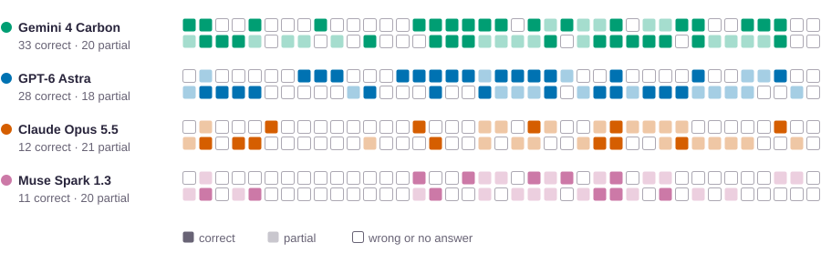
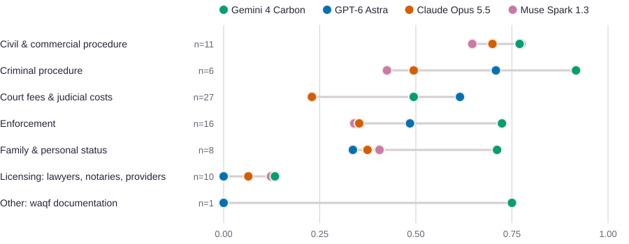

AI evaluation research
What frontier models know about Saudi law, and why MENA needs better legal data
I asked four frontier models 79 basic questions about Saudi legal procedure, fees and licensing, from memory. With Saudi law named as the jurisdiction, the best of them fully answered 33. None fully answered a single question on professional licensing. These are the kind of questions a court portal's help page answers, and the gaps say a lot about what data Arabic legal AI is still missing.
The test
The questions come from the Najiz set of ArabLegalEval, a public Arabic legal benchmark. Each has a short reference answer: a court fee, a deadline, the conditions for a licence, the body that decides a dispute. A Saudi lawyer would look most of them up in seconds.
Gemini 4 Carbon, GPT-6 Astra, Claude Opus 5.5 and Muse Spark 1.3 answered all 79 in Arabic, without search, tools or documents. Each was told to say «لا أعرف» ("I don't know") rather than guess. I graded every answer against a rubric of 270 required elements taken from the reference answers, weighted by type: core principles count most, then deadlines and amounts, then conditions and list items. A wrong amount or deadline cuts an answer's score by 70%, and a contradiction scores zero. Claude Sonnet 5.5 graded all four answer sets blind, one question at a time, with the answers relabelled in a fresh random order for each question.
| Model | Fully correct | Partial | Wrong or no answer | Mean score | «لا أعرف» |
|---|---|---|---|---|---|
| Gemini 4 Carbon | 33 | 20 | 26 | 0.591 | 15 |
| GPT-6 Astra | 28 | 18 | 33 | 0.504 | 26 |
| Claude Opus 5.5 | 12 | 21 | 46 | 0.331 | 6 |
| Muse Spark 1.3 | 11 | 20 | 48 | 0.326 | 30 |

Five findings
- Simple facts are the weak point. The best model was fully correct on 42% of the questions, and two of the four on 14–15%. These are not reasoning puzzles; each has one settled answer in a statute, regulation or ministry rule.
- Licensing is a blind spot for every model. None of the four fully answered any of the 10 questions on licensing lawyers, notaries, foreign law firms or enforcement service providers. The best mean score there was 0.13.
- Each model knows a different part of Saudi law. Gemini leads on criminal procedure (0.92), enforcement (0.72) and family law (0.71). Astra leads on court fees: it recalled 8 of the 16 fee and rate amounts exactly, against 6 for Gemini and 2 each for the other two.
- They fail in different ways. Astra declines when unsure and was wrong on only 7 of the 53 questions it attempted. Opus attempted 73 and was graded wrong on 40, including 8 wrong amounts or deadlines stated as fact.
- Naming the jurisdiction matters. The benchmark's questions never say "Saudi Arabia". In a first run without it, Gemini and Muse often answered in general terms or said the country was unspecified. One added line, «أجب وفق الأنظمة المعمول بها في المملكة العربية السعودية», raised Gemini's mean score from 0.47 to 0.59 and Muse's from 0.14 to 0.33.

Why the models miss
The likeliest explanation is that this material is thin in the models' training data. Saudi implementing regulations, fee schedules and licensing rules are published mostly in Arabic, change often, and are rarely discussed online the way, say, US federal procedure is. The pattern fits: every model did best on rules from the main statutes, which are widely reproduced, and worst on regulations and ministry procedures. This study can't separate missing training data from other causes, such as rules changing after a model's training or the effect of asking in Arabic.
What this means for MENA legal data
The results are small, but they point to five things that legal data for the region has to get right.
- The gap is shared, so the data is missing. Four models from four labs fail the same kind of question. That is unlikely to be one lab's design choice; it looks like a layer of Arabic regulatory knowledge that none of them was trained on.
- The gaps differ, so no one has filled them. If any lab had comprehensive Saudi regulatory data, its model would lead across the board. Instead each model knows different pieces, which is what you would expect from scattered, incidental coverage.
- Jurisdiction and date belong in the data. One line naming the country moved two models' scores by 0.12 and 0.18. Legal data for a region of many legal systems needs every item tagged with its jurisdiction, the date it was in force and its source, not just the text.
- Knowing when not to answer is part of the skill. In legal work a confident wrong amount or deadline is the costly failure. Training data and rewards should credit «لا أعرف» over a guess and penalise wrong figures heavily, as this rubric does.
- The checks behind a reward must be tested in Arabic. A reward for legal drafting is only as good as the checker that applies it. In my earlier work on reward reliability, a checker that couldn't read Arabic negation wrongly penalised 7 of 17 correct held-out sentences until it was fixed.
For anyone deploying legal AI in Saudi Arabia today: closed-book answers to basic procedural questions are not yet reliable from any of these models, and the prompt has to state the jurisdiction. A model needs current, cited sources, and a confident answer without one should be checked.
What this does not show yet
- Whether retrieval closes the gap. This was a closed-book test. With the source passages in front of them, the models would likely do much better. Running the benchmark with its passages would show whether the gap is in knowledge or in reading Arabic legal text.
- Whether new data fixes it. The strongest test is to write a set of sourced, lawyer-reviewed questions in the weak areas and show that adding them improves a model on a separate held-out set.
- How stable the numbers are. Each model answered once and one grader scored them. Re-grading the same answers moved scores by up to 0.03, and no lawyer has yet reviewed the close calls.
- Anything beyond Saudi Arabia. These are 79 questions from one Saudi portal. A small set for the UAE or Egypt would show whether the pattern holds across the region.
How it was run
The Saudi context did not reach each model in the same way. Gemini and Muse ran through an API with the one-line instruction above, and their requests had no search or tools enabled. Astra ran in Codex from a question file named after Najiz, the Saudi Ministry of Justice portal. Opus answered in a session already working on Saudi law. The benchmark has been public since 2024 and may be in any model's training data.
Every answer, the grader's element-by-element decisions, the blinding key and a script that recomputes all 316 scores are public in the najiz-closed-book-eval repository, with the full report as a PDF. The benchmark text itself belongs to ArabLegalEval and is downloaded from its source rather than redistributed.